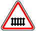

знак 1.1
Приложение 1 (дорожные знаки)
Закон Грузии «О дорожном движении» № 1830-რს, консолидированная редакция 25.06.2026 (Matsne, публикация 36). Юридическую силу имеет грузинский текст, русский — перевод. Источник: Matsne (рус.), Matsne (груз.).

Текст (рус., дословно)
1.1. «Железнодорожный переезд со шлагбаумом» – предупреждает о приближении к железнодорожному переезду со шлагбаумом.
Официальный текст (груз.)
1.1. „რკინიგზის შლაგბაუმიანი გადასასვლელი“ − იძლევა გაფრთხილებას რკინიგზის შლაგბაუმიან გადასასვლელთან მიახლოების თაობაზე.
Где это в курсе
Уроки
- Выпуск 4. Пешеходный переход, железнодорожный переезд, населённый пункт — разбирает, ссылается
Понятия курса
- Знаки 1.1 (переезд со шлагбаумом) и 1.2 (без шлагбаума) — вводится в выпуске 4
Типичные ошибки
- «Знаки 1.1 и 1.2 путают между собой или с другими» — как правильно: 1.1 — переезд со шлагбаумом, 1.2 — без шлагбаума
Билеты, которые на неё ссылаются (9)
№ 256 № 274 № 601 № 605 № 611 № 614 № 618 № 670 № 671
По ссылкам на закон в пояснениях базы (с учётом наших уточнений онтологии).
Ссылаются в законе
Постоянная ссылка: norm/sign-1.1.html